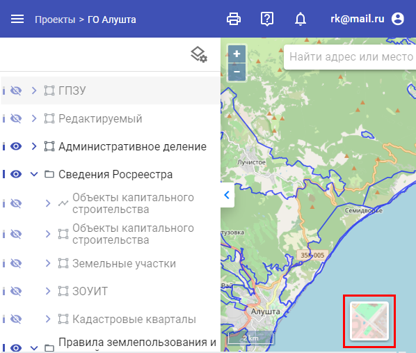

Подложки
-
Базовыми картами называются не редактируемые слои проекта, которые используются в качестве подложек и предоставляют
справочную информацию. В каждом проекте предоставляется возможность работать с разными видами подложек, например:
Ортофотоплан, ESRI Спутник, ESRI Карта, Open street map, а также пустая(белая) подложка, не носящая каких-либо
картографических данных. Для того, чтобы выбрать одну из перечисленных базовых карт, необходимо нажать на кнопку
«Переключить карту», расположенную в правом нижнем углу проекта, и выбрать нужную подложку.

Рис. 1. Выбор карты